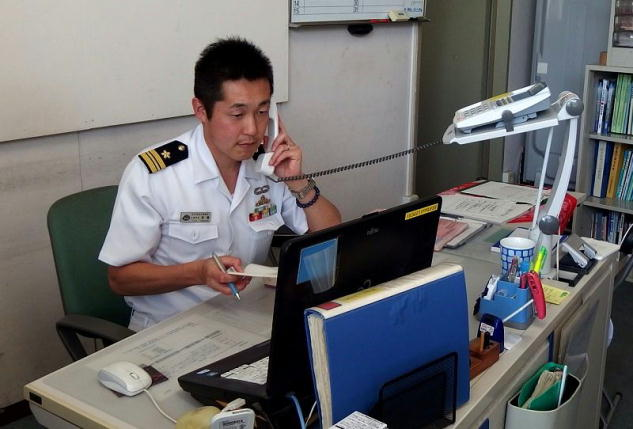

| 自衛隊のごはん 海上自衛隊 呉・佐世保編 プロローグ | |
| 廣川ヒロト | |
| denmei shobou (2014) | |
自衛隊のごはん 海上自衛隊 呉・佐世保編 プロローグ
はじめに
シリーズ第三弾を迎えた今作は海上自衛隊編です。
取材先は、九州は長崎の佐世保地方隊と、広島の呉地方隊です。
当初、取材は佐世保のみの予定でしたが、とある御縁のおかげで呉地方隊にも取材させていただくことになりました。
本書の内容は、主に取材に至る経緯を記しています。
食事の紹介については、本編でお楽しみください。
巻末には、試し読みとして本編の第一章を掲載しています。容量の制約上、一部の画像を省略、もしくは圧縮しています。
本作の初稿では佐世保の海軍カレーのお店について書かれていましたが、残念ながら刊行前に閉店になりました。
オーナー様から「お店のことは削除してください」と要請を受けましたが、すでに表紙ができあがっていたので、店名を伏せる条件でそのまま写真などは使わせていただきました。美味しいお店でしたので残念に思います。
プロローグ
《海上自衛隊の艦艇広報》
二〇一三年十二月某日。午後。
私は、博多港中央ふ頭第３岸壁に立っていた。
眼前には、鉄の船が接岸されている。
海上自衛隊の「じんつう」という名の護衛艦だ。
自衛隊福岡地方協力本部のウエブサイトを通して艦艇広報が行われているのを知り、足を伸ばしたのだった。
艦艇広報は、福岡では年間に二回ほど実施されているらしい。
（画像：護衛艦じんつう）
「じんつう」は、全長がおよそ一一〇メートル、全幅は一三メートルほど。
おおきい。
それが初めて目の当たりにした護衛艦の印象だった。
サイズは、旧海軍の一等駆逐艦とほぼ同じ。なので小型の船を想像していたのだが、その考えは完全に裏切られた。
グレーに塗り込められた細長い船体は、贅肉をそぎ落としたかのごとく尖っていて、いかにも戦闘艦という厳つさも醸し出している。
「護衛艦としては標準的な寸法――いや、小ぶりなほうですね」と言ったのは、私の隣に立つ、自衛隊福岡地方協力本部の広報班長、田村事務官である。
「じんつうの艦種記号はＤＥですが通称で沿岸用護衛艦と呼ばれています。ＤＤはそのまま護衛艦で、ＤＤのほうが一回り大きいですね」
「なるほど。艦種記号で船の種類が分かるようになっているんですね」
ちなみにＤＤＧはミサイル護衛艦で、ＤＤＨならヘリコプター搭載護衛艦となる。
じんつうは、旧帝国海軍の軽巡洋艦〝神通〟より名を受け継いだ乙型護衛艦で、進水は一九八九年。
あぶくま型護衛艦の二番艦にあたり、定係港は佐世保となる。
元々の軽巡洋艦神通は、一九四三年七月のコロンバンガラ島沖海戦に旗艦として参加し、戦没している。
後続の駆逐艦の雷撃照準のため、敵艦に向けてサーチライトによる照射射撃を行った。そのせいで敵艦隊より集中砲火を浴びて大破炎上、手負いながら神通は魚雷七本を発射するも、そのあとも次々と命中弾を浴びて沈没した。
戦史研究家で元アメリカ海軍少将のサミュエル・Ｅ・モリソン氏は「神通こそ太平洋戦争中、最も激しく戦った日本軍艦」と評している。
「内部の見学はされましたか？」田村事務官が聞いた。
「まだです。これから予定があるので......」私は艦艇見学のための長蛇の列を見やった。今から並ぶと小一時間はかかりそうだ。
田村事務官によると、昨日の公開初日は見学者はまばらだったが、同日夕方にテレビやラジオで紹介された結果、今日は午前中から盛況とのことだった。
試食程度だが、艦艇の厨房で調理したカレーが見学者に振る舞われる、という点も関係しているのだろう。
「海自のクリスマスコンサートの件はありがとうございました」私は礼を述べた。
つい数日前、福岡市中央区天神のアクロス福岡にて、海上自衛隊の佐世保音楽隊がクリスマスコンサートを行った。
私は田村事務官に「佐世保地方隊の広報のひとを紹介してほしい」と頼んだ。
すでにこのとき、航空自衛隊の芦屋基地の取材が決まっていた。
陸と空ときたからには、次は海となる。長崎の佐世保地方隊を候補として考えていたところに、佐世保音楽隊が福岡に来たのだった。
「いえいえ。良かったですね。佐世保の広報のかたと話せて」
「長嶺さん......でしたかね。階級を聞き忘れたんですが、分かります？」
「三佐です」
三等海佐は諸外国では少佐にあたる。少し意外に感じた。長嶺三佐は若く見えたので、幹部だとしても尉官クラスだろうと予想していた。
私は長嶺三佐に「航空自衛隊の芦屋基地の取材が終わったあと、折をみて取材の件で連絡をしますので、そのときはよろしくお願いします」と伝えた。
田村事務官と軽く雑談をしたあと、私は帰途についた。ひとまず、海上自衛隊のことは忘れよう。私は気持ちを次の取材先である芦屋基地に向けた。
《芦屋基地の中村三佐からの電話》
季節は冬から春に移り、二〇一四年三月末。
『自衛隊のごはん 航空自衛隊 芦屋基地編』は電子書籍として出版された。
すぐさま、佐世保地方総監部の長嶺三佐宛に、書籍データの入ったメディアを郵送した。
一週間ほど時間をおき、私は佐世保地方総監部の広報にコンタクトをとった。
（画像：佐世保地方総監部広報係長の長嶺哲郎三等海佐）
「はい、長嶺です」
「昨年の十二月に名刺交換をさせていただいた廣川です――」と私は切り出し「長嶺三佐宛に『芦屋基地編』を郵送していたんですが......」と伝えた。
「あ、届いてますよ」
「読んでいただけたでしょうか」
「......読んでないですね」
軽いジャブ。
「あ、そうですか......。とりあえず、取材の件について話をしたいので、一度お伺いしようと考えているのですが......」
――一週間後の午後、私が海上自衛隊佐世保地方総監部まで出向く段取りとなった。
陸上自衛隊や航空自衛隊がＯＫだったのだから、海上自衛隊に断られるはずはないと思ってはいたが、あまりさい先の良いスタートとは言えない......と少々不安な気持ちを抱いた。
企画書を準備していると携帯電話が着信した。芦屋基地の渉外室長だった中村三佐だった。
「どうもどうも廣川さん。いま私の友達とか知り合いにですね『芦屋基地編』を宣伝してるんですが」
「ありがとうございます」
「私が空幕勤務をしていた頃に知り合った人で瀧口二佐という、海上自衛隊なんですけど、いまはですね、広島の呉地方隊の基地業務隊の司令をされているんですよ。以前は潜水艦の艦長をされていたかたです」
「ほう。潜水艦の元艦長ですか」
「海上自衛隊の基地業務隊は、基地の給養も担当しているんですよ。福岡からは少し遠いけど、良かったら瀧口二佐を紹介しましょうか？」
「呉、ですか」
取材先が二カ所になれば、内容も充実するだろう。福岡からは遠方なのは確かだが、可能ならば是非、呉地方隊にも足を運びたい。
「紹介していただけたら助かります。それでは、来週、佐世保に行って打ち合わせの予定ですが、そのあと呉にも伺ってみます」
「では私からも瀧口二佐に連絡しておきますね」
「よろしくお願いします」
中村三佐から瀧口二佐の連絡先を聞き、電話を切った。
《海上自衛隊は食堂が沢山ある？》
福岡から高速バスに乗り、揺られること二時間弱。長崎県の佐世保に到着したのは平日の午後だった。
スマートフォンのＧＰＳで地図を確認しながら佐世保地方総監部を目指す。
（画像：米海軍基地のフェンス）
道を歩いていると、時折、年配の白人女性とすれ違った。観光客とは思えないラフな服装をしている。
ＧＰＳを見ると、海自の佐世保地方総監部の目と鼻の先には米海軍基地がある。
米軍兵士の関係者なのだろうか。
（画像：佐世保地方総監部隊門）
総監部の正門に到着した。
警衛所の受付で来意を告げ、面会書に記入する。
「帰るときに、面会の相手のかたのサインをお願いします」と用紙を渡された。
面会の方法は陸や空と変わらないようだ。
（画像：佐世保地方総監部）
総監部へと向かった。
広報室へと入り、
「こんにちは。廣川といいますが......長嶺三佐はいらっしゃいますか」と尋ねると、入口の近くのデスクで事務をしていた二曹の階級章をつけた女性自衛官が立ち上がった。
「いま、長嶺は会議中でして......」奥の部屋へと通された。
「こちらでお待ちください」
長机があり、椅子が並べられていて、どうやら会議室のようだ。
程なくして、バインダーを小脇に抱えた壮年男性が部屋にやってきた。「どうも初めまして。坂本と申します。先任をしております」
いただいた名刺を確認しつつ階級章を見る。陸や空とは若干違うが〝先任〟という言葉と、階級章の線の多さで曹長と推察した。「坂本......曹長ですね」
「はい」と坂本曹長は頷いた。「あ、お掛けください。長嶺はもうすぐ来ると思います」
私は勧められるままに椅子へと腰を落とした。坂本曹長はバインダーを机の上に置いた。バインダーに挟んであるのは『芦屋基地編』の印刷原稿だった。私の視線に気づいた坂本曹長は微笑を浮かべた。
「読ませていただきました。あれですね。隊門から......」
「た、たいもん？」
「いや、隊門から入るところから書かれているんですね」
「ああ、そういう意味ですか。全部を書いているわけではないんですが。ああいうふうに書かないと、とても短くなって、読み物として成立しないので......。それと、ある人によるとルポは基本的に〈人と人との会話で成り立つ〉ということなので、臨場感を出すという意味において、あのような書き方にしています。あとはやはり自衛隊の内部の話というのは、普通の人には意外性があるかな、と思いまして」
「廣川さんは陸自にいらしたんですよね。どちらのほうに？」
私が返答しかけたとき、扉が開いて長嶺三佐がやってきた。私は立ち上がり「お久しぶりです」と挨拶した。
「どうもどうも。遠いところを......」
坂本曹長は長嶺三佐に席を譲り、隣の事務室に下がった。
私は早速、長嶺三佐に企画書を渡した。企画書には、海上自衛隊の食事を紹介した電子書籍を執筆したいので隊員食堂を取材させて欲しい、という趣旨が書かれていた。
企画書をざっと読んだ長嶺三佐は一つ頷くと口を開いた。
「ご希望は隊員食堂とのことですが、海自は、陸自や空自と違って、食堂が沢山ありまして。つまり艦艇の数だけ食堂があるといっても過言ではありません」
「なるほど。可能であれば、艦艇の食堂でも食べてみたいです」
「そうですよね」長嶺三佐は思案気に頷いた。
「陸上基地にも食堂はあるんですよね？」
「佐世保地方隊では、二カ所あります。佐世保基地業務隊の隊員食堂と、佐世保教育隊の隊員食堂。基地業務隊の隊員食堂は主に営舎内居住者が利用します。教育隊のほうは学生が利用します」
「幹部食堂というのはないんですか？」
「海自の陸上基地にはありません。艦艇は、士官食堂が隊員食堂とは別にあります。――朝食は基地業務隊の隊員食堂で食べていただいて、昼食はせっかくなので、艦艇で調整しようかと考えています」
「ありがとうございます」
「海自は船が中心ですから、喫食にあわせて、艦艇見学も盛り込めたらいいかと考えています」
「調整していただけると有り難いです」
「いまのところ、どの種類の船で、というのはお約束はできません。今後、調整します」
「了解しました」
《海上自衛隊は、毎週金曜日にカレーを食べる》
――朝食が基地業務隊の隊員食堂で、昼食が艦艇の食堂、夕方は教育隊の隊員食堂で、と決まった。
ほか、厚生センターの売店や委託食堂、佐世保資料館などの話が続いた。
打ち合わせが一段落した頃を見計らい、私は長嶺三佐に尋ねた。
「海上自衛隊の広報の担当としての意見というか、これを見たほうがいいんじゃないか、という長嶺三佐の考えがあれば聞きたいのですが」
「そうですね、うーん。海上自衛隊は、艦艇での勤務が基本なので、船の種類や、どんな職種があるのかなど......。あと、全般的な陸自や空自との違い、などですかね」
「なるほど、やはり海自を取材するとしたら艦艇は外せない、という意味ですね」
長嶺三佐は大きく頷いた。
「食事については、佐世保ではカレーに力を入れてます。海上自衛隊では毎週金曜日のお昼はカレーが出ます。旧海軍のときは土曜日の昼でしたが、週末にカレーを食べる、というのは古くからの伝統です。また、ついこの前、横須賀で第二回『ＧＣ１グランプリ』という、ＧＣというのは〝護衛艦カレー〟の略なんですが、護衛艦のカレーを食べ比べる、という催しがありまして、佐世保でも昨年末に第一回『ＧＣ１グランプリ』を行いまして、護衛艦「さわぎり」の『牛すじ入りイカ墨カレー』が一位となりました。という経緯もありますので、本を書かれるのであればカレーに着目されると面白いんじゃないでしょうか」
「ポイントは艦艇とカレーですね。分かりました。――艦艇では、夜食も出ると聞いたのですが」
「以前はそうでしたが、最近はなくなりました。健康管理の面で色々とありまして。夕食の時間を遅らせるなどの対応をして、夜食は出さないようになっていますね。おにぎり程度なら食堂に置いてある場合もあるんですが」
「なるほど」
このあと、長嶺三佐に厚生センターに案内していただき、売店をざっと見学した。コンビニというよりは個人商店の雰囲気に近かった。
長嶺三佐によれば、佐世保地方隊の厚生センターは複数箇所に分散しており、規模はそれぞれ同程度、とのことだった。
取材の日時や、細かな部分は今後調整する、という段取りになり、私は佐世保地方総監部をあとにして帰途についた。
《呉地方総監部へと赴く》
佐世保での打ち合わせのちょうど一週間後、今度は博多駅から新幹線に乗り広島へと向かった。広島駅でローカル線に乗り換え、呉を目指す。
あらかじめ呉地方隊の基地業務隊司令・瀧口二佐にはアポイントを取っていた。
警衛所にて基地業務隊の隊舎の場所を教えてもらう。佐世保もそうだったが、海自の基地内は、空自と比べると手狭な印象だ。
隊舎に辿り着き、階段を上り二階へと進んだ。業務隊庶務科事務室へ声を掛けると、すぐさま応対の隊員が「こちらです」と案内してくれた。
廊下を進み、奥の部屋へと歩く。
〝司令室〟とある。
「失礼します」と声を掛け、室内へと足を踏み入れた。
瀧口二佐は「はじめまして。基地業務隊の瀧口です」と出迎えてくれた。応接セットの椅子を指し示す。「どうぞお座りください」
名刺交換のあと、芦屋基地の中村三佐との関係を尋ねた。「中村三佐とはどこでお知り合いになったんですか」
「中村三佐は、五年ほど前に空幕に勤務していて、退職予定の隊員の就職先を探す手伝いみたいな業務があるんですが、私が海幕の、やはり同じような仕事をしていまして、そこで知り合ったんですよ」
「中村三佐は......面白い人ですよね」
「そうですね。あのひとは誰からも好かれて、人気者で......」瀧口二佐は中村三佐を思い出すように目を細めた。
私は瀧口二佐に時間を作ってくれたことにお礼を述べ、早速企画書を手渡した。企画書にざっと目を通した瀧口二佐は「佐世保は、その、調整先というか、窓口はどこでしょうか？」と尋ねた。
「総監部の広報です」
瀧口二佐は頷いた。「そうですよね。では、呉も広報を通すべきですよね。隊員食堂自体は、業務隊の管轄ですが、艦艇になるとうちの権限は全く及びませんし」
瀧口二佐はその場で広報に電話をかけ、急な話で申し訳ないが、今から出向いて打ち合わせできないか、と掛け合ってくれた。広報のＯＫが出たので、瀧口二佐と共に歩いて総監部に向かう。
歩きながら私は瀧口二佐の制服の肩先をちらりと見た。
「階級章はどこにあるんですか？」
瀧口二佐は片手を上げて袖口を見せてくれた。「海上自衛隊の冬服は、階級章が袖にあるんですよ。イギリス海軍式です。日本に限らず諸外国の海軍は、ほとんどはロイヤルネイビーを参考にしていますから、みんな一緒です」
ちなみに陸自の制服では、幹部の場合、階級章は肩につく。
「隊員食堂の食事については、特に問題はないんですが、艦艇の食堂はちょっと事情が変わってくるんですよね。管轄の問題もあるんですが、防衛機密とかの面でも色々と厳しいです」
「そうみたいですね」
建物の裏の小径を通り、急な石段を登り、薄暗い犬走りを抜ける。
「えっと......海自の基地って、結構入り組んでいるんですね」
「実は近道を通ってます」
角を曲がると、赤煉瓦の建物が視界に入った。
（画像：呉地方総監部）
「この建物は、鎮守府時代のものです」瀧口二佐が説明する。
竣工は一九〇七年（明治四〇年）で、地下一階、地上二階建て。煉瓦石積みの建築は重厚な雰囲気を漂わせた、歴史を感じさせる建物である。
内部へと足を踏み入れ、広報のプレートのかかった部屋へと入る。
呉地方総監部広報係長の阪本一尉が対応してくれた。
企画書を一読した阪本一尉は、難しげな顔を私に向けた。
「概要は分かりました。艦艇の食事については......難しいですね。海上自衛隊は管轄が入り組んでいまして、呉地方隊は艦艇に対して指揮権をもっていません。呉地方隊としては、後方支援を行っているに過ぎません。ですから艦艇の食事については〈はい、わかりました。話を進めましょうか〉という訳にはいかないんですよね」
「了解しました。艦艇については可能であれば、ということで結構です」
《潜水艦の中で食べてみたい！》
「呉は広報の規模が小さくて......。渉外活動、マスコミ対応も含めて、少人数で当たっている状況でして......。なので数日間、廣川さんに私がつきっきりで同行する、というのは......難しいというか、無理ですね」
瀧口二佐が身を乗り出した。
「基地業務隊の隊員食堂での喫食であれば、業務隊から同行する隊員を出すのは可能です」
ぱっと、阪本一尉の顔つきが明るくなる。「あ、そうですか。そういうことでしたら......」
瀧口二佐は私に顔を向けた。「佐世保は、艦艇はどうだったんですか？」
「いまのところ船の種類は分からないけど、昼食は艦艇で、ということになっています。朝が業務隊の隊員食堂で昼は艦艇。夜が佐世保教育隊の隊員食堂の予定です」
阪本一尉は何度か小さく頷いた。「やはり海上自衛隊の食事ということであれば、艦艇は外せないでしょうね。協力してくれる艦艇をなんとか探してみます」
「よろしくお願いします。――潜水艦の食事は、とても美味しいと聞いたんですが」
「潜水艦は、食事の予算が他と比べて多いんですよ。ストレスが溜まりやすい環境にあるので、食事に手は抜けない、というか......」
「潜水艦での喫食は難しいでしょうか？」
「うーん。確約はできないですね。潜水艦は、行動が公にはされてませんから。けど、呉は潜水艦部隊があるので、呉として協力するのであれば潜水艦が調整できれば面白いかもしれないですね」
喫食は基本、基地業務隊の隊員食堂で、もし調整が可能ならば潜水艦で、という段取りとなった。
《佐世保は、軍事にまつわる飲食店も多い》
数日後、佐世保地方総監部の長嶺三佐より連絡があった。
艦艇での喫食は護衛艦〝こんごう〟で調整している、とのことだった。
 （画像：護衛艦こんごう）
（画像：護衛艦こんごう）
こんごうの就役は一九九三年（平成五年）三月。イージス艦の一番艦で、艦種記号はＤＤＧ。ミサイル護衛艦と呼ばれる。
二〇一三年四月に、北朝鮮にミサイル発射の兆候が見られた際、破壊措置命令を受けて日本海に展開したのは記憶に新しい。同年六月末、破壊措置命令は解除され、およそ三ヶ月の任務を終え佐世保へと帰港した。
期日は瞬く間に過ぎ、佐世保地方隊の取材前日。
昼前、博多バスセンターから高速バスに乗り、午後の早い時間には佐世保駅に辿り着いていた。
明日の朝六時過ぎに、佐世保基地業務隊の警衛所に出向く手はずなので、本日の予定は何もない。
私は海軍カレーのお店を発見した。長崎は軍港として栄えた歴史があるため、カレーに限らないが、軍事にまつわる飲食店も多い。
なんとこの店のオーナーは、海上自衛隊のＯＢで、現役時代は艦艇の調理員長をされていたらしい。
店内に入る。早速「海軍カレーをひとつください」と注文する。
数分で海軍カレーがやってきた。
（画像：海軍カレー）
口に運んでみる。
野菜と果物の甘みと、スパイスの辛みがブレンドされた、大人向けの味わいのカレーだ。
中辛、といったところか。
最初は甘みを感じるものの、食べているうちに辛さが徐々に強まってくる。
値段はランチ時は五〇〇円で、通常は六〇〇円。
（画像：海軍カレー）
お店の壁には、海軍カレーの盛りつけのコンセプトが書かれてあった。
それによると――
ご飯は日本国本土のイメージ。
カレーは海を表し、ジャガ芋は島。
キヌサヤは二隻の護衛艦で、錨型の人参は海軍のシンボル。
※お店は、残念ながら二〇一四年九月に閉店しました。
艦艇の調理のことなど、興味深いお話も聞かせていただきましたが、閉店するということで、店名などについても控えさせていただきます。
《佐世保史料館を見学》
海上自衛隊佐世保史料館は、佐世保市上町に所在している。
取材計画の中に史料館見学も含まれていたが、前日、時間があったので覗いてみた。
入館は無料ながら、館内の展示物は充実している。
まず七階に移動し、ルートに従って下りていくと一階に戻る形になる。
（画像：史料館内部）
館内の撮影は売店も含めて禁止だが、館長の米倉修二防衛事務官に事情を説明し、特別に許可をいただいた。
史料館所属の武藤敏明氏に、展示物の説明をしていただいた。
武藤敏明氏は海上自衛隊ＯＢとなる。
七階は展望ロビーで、佐世保市街地や、海上自衛隊、及び米海軍の停泊艦艇を望むことが出来る。
同じく七階の映像ホールでは、海上自衛隊の日常訓練や災害時の活動、市民との交流の様子や、ペリー提督の来航から海軍設立の経緯、海上自衛隊の現在に至るまでの映像が時間に合わせて上映されている。
（画像：史料館六階）
六階では、海軍の軌跡Ⅰとして、徳川幕府海軍から、明治海軍への変遷などが紹介されている。
五階では、海軍の軌跡Ⅱとして、日清戦争、日露戦争当時の艦艇の模型などがディスプレイされている。
四階は、海軍の軌跡Ⅲとして、主に太平洋戦争当時の資料などが並ぶ。
航空母艦赤城や戦艦大和の百分の一スケールの模型は見応えがある。
（画像：史料館三階）
三階では、海上自衛隊の創設からのあゆみ、歴代護衛艦の模型や航空機、制服などが陳列されている。
ちなみに海上自衛隊の制服は、一九五二年（昭和二七年）に制定され、以後、大幅な改良を加えることなく現在に至っている。
二階では、海上自衛隊の任務や活動の紹介、資料閲覧室などがある。
簡単ながら、ゲーム形式の操艦シミュレータもある。
一階では、時節に合わせた企画展示や、佐世保地方隊の歴史や史料などが紹介されている。
それによると――
明治政府が佐世保に鎮守府を設置したのは、一八八九年（明治二二年）七月で、以来、日本の最も西を防備する根拠地として、朝鮮半島、南西諸島や台湾などを管轄した。
一九四五年の終戦によりアメリカ軍が進駐し、主要な建物は接収されることになる。
五年後の一九五〇年六月、朝鮮戦争が勃発。
海上自衛隊の前身である海上警備隊が創設され、一九五四年六月に同組織は海上自衛隊へと発展改編された。
創隊当時、艦艇や装備は主にアメリカ軍からの供与を受けていたが、徐々に国産化を進めていき、防衛力の強化に取り組んでいく。
ソビエト連邦崩壊後は、世界情勢に合わせて自衛隊の任務も多様化し、近年は国際貢献などの活動も頻繁に行われている。
（画像：史料館一階の売店）
史料館一階は、売店も併設されている。
こちらも撮影は禁止となっているが、特別に許可をいただいた。
（画像：一階売店）
売店では、海上自衛隊の艦艇の識別帽や、キーホルダー、模型などのグッズが販売されている。
お店の人によると、人気なのは「海軍カレー」のレトルトパック、とのこと。
二〇一二年（平成二四年）十二月に佐世保で開催された護衛艦カレーグランプリで優勝した護衛艦さわぎりの『牛すじ入りイカ墨カレー』のレトルトも販売中。
一階、および二階部分は、旧海軍時代に将校の宿泊、福利厚生施設として利用されていた『佐世保水交社』の一部を修復、新館を増築している。
三階以上はガラス張りの現代的な造り。
愛称の「セイルタワー」は、屋上部の構造物が船の帆にも見えることからつけられている。
海上自衛隊佐世保史料館
住所 長崎県佐世保市上町八‐一
開館時間 午前九時半から午後五時まで
入館料金 無料
普通車二〇台、大型バス六台分の駐車場が併設されています。
休館日は毎月第三木曜日、および年末年始（十二月二八日～一月四日）。
《佐世保東山海軍墓地》
続いて向かったのは佐世保市東山町にある佐世保東山海軍墓地。
海上自衛隊の佐世保教育隊の近くに所在している。
今回、海上自衛隊を取材して、陸自や空自との違いを色々と感じたが、そのひとつに、海自は敷地が一カ所にまとまっておらず、点在している、というものがある。
海自は、旧海軍が使用していた施設をそのまま受け継いだ例が多く、また、土地の一部が進駐軍に接収されて、仕方なく、という部分もあるだろう。
佐世保地方総監部広報係長の長嶺三佐によれば、
「海自は、ベースが艦艇なんですよね。陸自と空自は、基地がベースになっていますが、海自にとって、基地は、帰る場所ではありますが、基本は艦艇なので、たとえば洋上にでると、船の中だけで自己完結しないといけません。佐世保地方隊も、敷地は四カ所ぐらいに分かれていて、確かに不便ではありますが、呉や横須賀、舞鶴なんかも、場所は飛び飛びですね。大湊ぐらいです。ひとつにまとまっているのは」
（画像：佐世保東山海軍墓地にて。東郷平八郎元帥像）
話を佐世保東山海軍墓地に戻す。
元々は佐世保鎮守府が墓地区画として買収し、殉職者の埋葬地として使用していた。
太平洋戦争終戦までは海軍管轄の国有地だったが、その後は管理がされなくなり、荒廃することとなる。
一九五九年（昭和三四年）五月、佐世保市が管理するところとなり、名称も「東公園」と改められた。
旧海軍七団体、海上自衛隊などの協力により、一九九四年（平成六年）には、ほぼ現況に復すことになった。
碑は合葬碑、個人碑に分けられ、合葬碑は、戦前のものが十五基、戦後には四五基が建立されている。
（画像：航空母艦飛龍の慰霊碑。ミッドウェー海戦での奮戦は有名）
個人碑は戦前のものが四一七基あって、中には、陸軍兵士三名、ドイツ水兵一名の墓も含まれている。
二〇〇三年（平成十五年）五月には拝殿の向かって左側に旧海軍戦没者、ならびに海上自衛隊殉職者の慰霊顕彰の碑として「海の防人之碑」が建立された。
（画像：戦艦榛名の慰霊碑）
毎年五月二七日には「日本海海戦記念式典」、八月十四日には「お盆供養行事」、秋には、佐世保市主催で「戦没者追悼式」が執り行われている。
佐世保鎮守府管轄内（九州・四国・沖縄）の一七万六千余柱と共に、佐世保警備区管内の海上自衛隊殉職者の御霊が祀られている。
また、諸外国の海軍武官の弔問施設として献花も行われている。
佐世保東山海軍墓地東公園
住所 長崎県佐世保市東山町一八二番地一
日暮れ近く、ホテルに戻り、その日は早めに就寝した。
早朝に目覚めて身支度を調え、ホテルを出た。時刻は午前六時前。天気は快晴。徒歩で、佐世保基地業務隊へと向かった。
『自衛隊のごはん 海上自衛隊 呉・佐世保編』へとつづく
試し読みとして、本編の第一章を掲載します。容量の制約上、一部の画像を省略、もしくは圧縮しています。
巻末では、本編の目次がご覧いただけます。
自衛隊のごはん 海上自衛隊 呉・佐世保編
第一章 「以前はホテルの調理場で働いてました」佐世保基地の調理員長（試し読み）
《基地業務隊の隊員食堂は営舎内居住者のための食堂》
佐世保基地業務隊の警衛所に辿り着くと、広報係の女性自衛官が出迎えてくれた。
朝食に同行してくれるのは時枝菜津美海士長で、営舎内居住者にあたる。
 （画像：広報係の時枝菜津美海士長）
（画像：広報係の時枝菜津美海士長）
基地や駐屯地の寮に住む隊員は営舎内居住者と呼ばれる。
結婚すると営舎外居住者となり、基本的には隊員食堂での喫食はできない。
あと、准尉及び三尉以上の幹部自衛官は独身でも営外勤務となるので、通常は隊員食堂（幹部食堂）での喫食は不可となる。
自衛官であれば、誰しもが無料で隊内で食事ができる訳ではない。
基地の外から通う営舎外居住者は、弁当を持参する隊員もいる。
また、基地内の厚生センターには民間の委託食堂や売店が入っており、そこで食べたり、弁当を購入したりもできる。
《男性隊員が立ち入ることのできない区域》
時枝士長に案内してもらって隊員食堂へと向かう。
「佐世保地方隊には、女性自衛官隊舎というのはあるんですか？」
「佐世保は、専用の隊舎はないんですよ。いま向かってるパークサイド平瀬という建物の一階に隊員食堂があるんですが、上の階は、営舎内自衛官隊舎として使われています。その一部の階が女性専用になっています」
「その一部の階には、男性は入れませんよね？」
「そうですね。男子禁制です」と時枝士長は頷いた。
ある人に「自衛隊基地の中の女子寮に男は入れない」と言ったところ「それは建前でしょう」との返答をもらった経験がある。
たとえば、ドラマや映画などフィクションの世界では、男子禁制の女子寮に男が忍び込む、というシチュエーションは珍しくはない。
だが、自衛隊の中の女性自衛官隊舎に関しては、有名無実的な欺瞞は存在しない。決まりで「男性が入れない」となっていれば、絶対に入れない。例外としては、点検などで、管理者たる上官（男性）が女性自衛官に付き添われて内部に入る場合はある。
もちろん、物理的には可能だから「絶対に」というのは言い過ぎかもしれないが、男子禁制に関しては本音と建前の部分は存在しないと思う。
時枝士長は言う。
「エレベーターも二つあって、一つは女性専用ですね。階段の踊り場にはセンサーが設置されていて、不用意に足を踏み入れると警報が鳴る仕組みになっています」
営内隊舎の入口のすぐ左側が、隊員食堂入口となっている。
（画像：佐世保基地業務隊の隊員食堂内部）
食堂へと入った。
「けっこう......小さい食堂なんですね」
「基地業務隊の隊員食堂は利用者が多いときでも二〇〇人ぐらいなので小さいほうだと思います。佐世保教育隊にも隊員食堂があるんですが、そちらは学生が入校してますので、規模はこちらより大きいですね」
佐世保地方隊の敷地がまとまっておらず、点在していることと、艦艇勤務の隊員は、艦艇の食堂で食べるので、基地業務隊の隊員食堂は利用者が少ないのだろう。
《基地業務隊の朝食はシンプル》
通常、配食はセルフだが、食堂内には、すでに時枝士長と私の分の食事が用意されていた。
ありがとうございます。
 （画像：佐世保基地業務隊の隊員食堂の朝食）
（画像：佐世保基地業務隊の隊員食堂の朝食）
内容は次の通り。
――――――――
・ごはん（鰺茶漬け）
・切り干し大根のはりはり漬け
・若布と豆腐としめじとネギの味噌汁
・赤貝味付
・乳酸菌飲料
――――――――
七六七キロカロリー
ほか、ワサビと刻み海苔の小パックが付属。
お茶漬けなので、トレイ中央の緑茶をご飯にかける。
 （画像：佐世保基地業務隊の隊員食堂の朝食）
（画像：佐世保基地業務隊の隊員食堂の朝食）
航空自衛隊の芦屋基地の朝食と比べるとシンプルかな、というのが正直なところ。
芦屋基地の初日の朝食は、
・ごはん
・油揚げの味噌汁
・レバー煮
・胡麻チキンサラダ
・ポテトベーコン
・生卵
・ミニ納豆
・牛乳
という豪華さだった。これで一〇〇〇キロカロリー超え。
自衛隊の食事は、あらかじめメニューが決まっていて、選択することはできない（たまに、選べる献立のときもある）。どうしても偏りが出てしまう。なのでたまたま質素なのかもしれない。
（画像：航空自衛隊芦屋基地のある日の朝食）
テーブルの上にメニュー表があったので確認した。
朝食は平均七五〇キロカロリー程度で、時折八〇〇を超えるが、品目的にも質素なものが多かった。
参考までに前日の朝食は、
・ごはん
・ソフト稲荷
・たくあん漬け
・味噌汁
・黄金イカ
・コーヒー牛乳
これで七七一キロカロリー。
一昨日はパン食で、
・ロールパン
・コンソメスープ
・ハムソテー
・牛乳
・目玉焼き（付け合わせはレタス）
これで六六四キロカロリー。
朝食がパン食なのは、メニューを見る限り、週一回らしい。
日曜日の朝だけは既製品の菓子パンと飲み物のみで、月曜日から土曜日までは、調理した朝食のようだ。
《具沢山で麺が見えない塩ラーメン》
続いてお昼ご飯の紹介。
 （画像：佐世保基地業務隊の隊員食堂の昼食）
（画像：佐世保基地業務隊の隊員食堂の昼食）
内容は次の通り。
――――――――
・ごはん（小）
・竜田揚げ
・刻みキャベツ
・チンジャオロース
・豆腐のサラダ
・塩ラーメン
・牛乳
――――――――
一二五五キロカロリー
実は廣川はこれを食べていない。
初日の昼は、護衛艦こんごうで喫食したので、画像の食事は時枝士長の食べたもの。
艦艇の食堂とはメニューが違うので、紹介するのも面白いと考え、時枝士長に撮影してもらった。
塩ラーメンは、麺が見えないほどに具（チャーシュー、煮卵、小葱、もやし、メンマ、紅ショウガ）が敷き詰められていて、家庭的な雰囲気といってもいいだろう。
《夕食は、和と漢と洋の取り合わせ》
 （画像：佐世保基地業務隊の隊員食堂の夕食）
（画像：佐世保基地業務隊の隊員食堂の夕食）
内容は次の通り。
――――――――
・ごはん
・白身魚のムニエル
・レタス、キュウリ
・ニース風サラダ
・野菜炒め（味噌）
・ワンタンスープ
・リンゴジュース
――――――――
一〇七七キロカロリー
私は夕食は佐世保教育隊の隊員食堂で喫食したので、こちらも食べていない。
時枝士長の夕食となる。
ムニエルは、材料に小麦粉などをまぶしてバターでソテーした料理で、ニース風サラダは、ゆで野菜にフレンチドレッシングを和えたもの。どちらもフランス料理の系譜となる。
ワンタンスープが中華で、野菜炒め（味噌）が日本風と考えると、和漢洋料理といえるかもしれない。
《やはり朝食はシンプル》
こちらは、二日目の朝食。
（画像：佐世保基地業務隊の隊員食堂の朝食）
内容は次の通り。
――――――――
・ごはん
・里芋と豆腐とえのきとネギの味噌汁
・牛肉缶の炒め煮
・ホタテ中華
・たくあん漬け
――――――――
六三二キロカロリー
これぞ正統派、という趣の朝食だと思う。
物足りない、と感じる人もいるかもしれないが、私はちょうど良い分量だった。
 （画像：佐世保基地業務隊の隊員食堂の喫食風景）
（画像：佐世保基地業務隊の隊員食堂の喫食風景）
《季節のイベントに合わせた料理》
時刻は七時過ぎで、喫食しているのは四～五人程度だった。
時枝士長によると、朝食が混む時間帯は、六時四〇分前後らしい。
「時枝士長は、元々のマーク（職種）はなんですか？」
「私のマークは射撃です」
「射撃？ 射撃手という意味ですか？」
「撃つことはしません。艦艇の、速射砲とか機関砲、ミサイルなどの取り扱いと整備が主な仕事ですね」
「だったら艦艇に乗っていたんですか？」
時枝士長は頷いた。「いまは広報ですけど、以前は補給艦〝おうみ〟で勤務していました」
「陸上施設の隊員食堂と艦艇の食事は、どちらが美味しいですか？」
「どちらも美味しいですけど、あえていうなら艦艇のほう......かな。洋上にでると、どうしても食事が楽しみになってしまうのも関係しているかもしれません。あと、おうみの調理員長が、舞鶴の第４術科学校の調理の教官をしていたかたで、食事についてはこだわりを持っていらっしゃいました。クリスマスとか、節分とか、イベントに合わせた料理がでたりしていました」
「いいですね」
「基地業務隊の隊員食堂も、イベントに合わせた料理は出ますけど、艦艇勤務だと新鮮味が違いますね」
「業務隊の隊員食堂は、メニューは栄養士が考えているんですよね？」
「基本的にはそうなんですけど、いまは、栄養士のかたがいなくて、調理員長のかたが、栄養士もされているんですよ」
 （画像：隊員食堂の調理員長兼栄養士の松田秀宣海曹長）
（画像：隊員食堂の調理員長兼栄養士の松田秀宣海曹長）
お話を聞きたい、とお願いして、栄養担当官兼調理員長の、松田秀宣海曹長に時間をつくっていただいた。
厨房の見学もしたので、適宜画像を挿入していく。
制服姿で現れた松田曹長は、丁寧な物腰の、自衛官らしからぬ、温厚な雰囲気の紳士だった。
「お忙しいところお時間をつくっていただき、ありがとうございます。――松田曹長が、栄養士もされているということで、メニューの作成もされているんですよね？」
「はい。いま、専属の栄養士が休職中でして、私は栄養士の免許も所持していますので、その代わりもやっています」
「メニューを作成する上での、工夫とかありますか？」
「自衛隊員は体力を使いますからまずはカロリーの確保です。それと栄養のバランスですね。あとは、食べる人の嗜好を満たすメニューを心がけています。若い隊員から、そうでない隊員まで幅が広いので、全ての嗜好を満たす、というのは難しいのですが、可能な限り皆が満足できるメニュー構成を配慮していますね」
「喫食人員は、一食あたりどのぐらいでしょう」
「少ないときは五〇～六〇人です。講習などで、他の部隊から人員が佐世保に集中する場合は、二〇〇名を超えるときもあります。基本的には、昼食の喫食人員が一番多いですね」
 （画像：手前が松田秀宣海曹長）
（画像：手前が松田秀宣海曹長）
《時枝士長の好きな食べ物》
「新しい献立がメニューに加わる場合もあると思うのですが、どんなふうに考えているのでしょうか」
「季節に合わせた食材をつかったメニューはよく考案します。適宜、嗜好調査、アンケートをとっていますので、その結果にもとづいて考えたりもします」
私は時枝士長に尋ねた。
「時枝士長の好きな食べ物はなんでしょう？」
「ちょっと言いづらいんですけど......」ちらりと松田曹長の顔を見る。
「ミルフィーユカツです。中にチーズが入っていて、豚肉で巻いたやつなんですけど。冷凍食品なので......」遠慮がちに言った。
「いや、けどいまの冷凍食品は美味しいですよね」私は応じた。
松田曹長は頷く。「確かに冷凍食品の味は昔に比べるとよくなっていますね」
《ボンファン？》
「メニューに松田曹長の趣味が反映される場合もあるのですか？」
「それはもう、よくありますね。私は、自衛隊に入る前はホテルの調理場で働いていたんですよ。フランス料理を作っていまして」
「だったら、フランス料理っぽいものが出たりもするんですか」
「はい。ボンファンとか......。けどメニュー表に、ボンファンと書いても、なんのこっちゃ分からないので、グラタン風とか名前は変えてますけど」
「ボンファンって、なんですか？」私は聞いた。
「煮込み料理とか、家庭的な、とかそんな意味があるんですが、簡単にいえばグラタンに近いですね」
松田曹長の温厚な人柄は、元ホテルマンという部分も関係しているのかもしれない。
「一日あたりの予算はいかほどでしょうか」
「えっとですね......ちょっと確認してきます」松田曹長は身を起こし、奥の事務室へと消えた。
私は時枝士長に聞いた。「松田曹長って現場の長ですよね？」
「そうです」
「制服を着てるんですか？」
時枝士長は少し笑って、
「廣川さんが話を聞きたいといわれたから、制服に着替えられたんですよ。いつもは調理服です」
「申し訳ないことをしましたね......」
実はこのあと、厨房をみせてもらったので、松田曹長には短時間のうちに二回も着替えさせてしまった。松田曹長は嫌な顔ひとつせず、私の気まぐれな要望に応じてくれた。ありがとうございます。
松田曹長が戻ってきた。「一日あたりは定額が決まっていまして、八二四円です」
「予想より低予算なんですね。――調理員は、松田曹長を含めて何人いるのでしょう」
「私も含めて一〇名です」
「栄養士のかたが休職されていて松田曹長がその代わりということですが、その......特別な手当は付くんですか？」
松田曹長は頭をかいた。「それが......つかないんですよ」
自衛隊の給食施設には、たいてい栄養士が勤務しているので、佐世保基地業務隊の隊員食堂はイレギュラーなのだと思う。
詳しくは聞かなかったが、恐らく一時的なものだろう。
お話のあとは、厨房内部を見学させてもらった。
厨房は、とても広々としており、清潔で、整理整頓がよくなされているとの印象だった。
《陸上施設の隊員食堂でも金曜の昼はカレー》
二日目の昼食については、私は護衛艦こんごうで食べたので、画像は時枝士長が喫食した食事となる。
（画像：佐世保基地業務隊の隊員食堂の昼食）
内容は次の通り。
――――――――
・ごはん
・挽肉カレー
・かに爪フライ
・ミックス野菜
・ゆで卵
・りんご
・らっきょう
・福神漬け
・牛乳
――――――――
一三四三キロカロリー
金曜日にカレーを食べるのは、洋上で曜日の感覚を忘れないため、というのが理由の一つだが、陸上施設の隊員食堂でも金曜日はカレーを食べる。
陸上自衛隊でも駐屯地によっては、金曜日とは限らないものの、カレーの日が定まっている場合がある。
《夕食はホイル焼き》
 （画像：佐世保基地業務隊の隊員食堂の夕食）
（画像：佐世保基地業務隊の隊員食堂の夕食）
内容は次の通り。
――――――――
・ごはん
・鮭のホイル焼き
・牛肉とアスパラ炒め
・棒々鶏サラダ
・コーンポタージュ
・牛乳
――――――――
八九六キロカロリー
例によって夕食は佐世保教育隊の隊員食堂で喫食したので、時枝士長の夕食となる。
ホイル焼きは、喫食人員が少ないから出せるメニューだろう。
《喫食人員の少なさがポイント》
佐世保基地業務隊の隊員食堂は、朝食はシンプルで、昼食が豪華なときは夕食が控えめ。
夕食が高カロリーの場合は、昼食が質素のようだ。
毎週金曜日の昼にカレーを食べる、という点は除くとして、海自だから何かが違う、という部分は発見できなかった。陸自や空自の食堂と大きな違いはないだろう。けれども、佐世保基地業務隊の隊員食堂は、喫食人員が少ない分、きめの細やかな対応ができるのでは、と感じた。
――本編の試し読み部分は以上となります。
本編では、佐世保基地業務隊の隊員食堂のほか、護衛艦こんごうでの喫食、呉基地業務隊の隊員食堂、潜水艦いそしおでの喫食についてなどを掲載しています（本プロローグも抜粋という形で収録）。
――自衛隊の食事は美味しいのか否か。
自衛隊員は普段、どんなものを食べているのか。
それを知るために、自衛隊の隊員食堂でごはんを食べてきました。
 《内容紹介》
《内容紹介》
本書は、海上自衛隊の食事を紹介する電子書籍です。
取材先は、九州は長崎の佐世保地方隊と、広島の呉地方隊です。
食事は朝昼晩で、呉と佐世保で合計十三食、いただきました。
うち、護衛艦（こんごう）での喫食が二回、潜水艦（いそしお）での喫食が一回です。
ほか、呉や佐世保の関係各所から食事画像を多数提供していただきましたので合わせて紹介しています。
巻末には、護衛艦こんごう、潜水艦いそしお、呉基地業務隊より教えていただいたカレーのレシピを掲載しています。
キンドルストアにて好評発売中！
 （画像：護衛艦こんごう）
（画像：護衛艦こんごう）
《普段、立ち入ることのできない護衛艦の内部へ》
護衛艦こんごうの艦艇見学も収録しています。
弾薬庫は立ち入り不可でしたが、艦橋、前甲板、医務室、操縦室、それから厨房、科員食堂などを収録。
こんごうのベースとなったミサイル駆逐艦『アーレイバーク級』の名前は、アメリカ海軍アーレイ・アルバート・バーク海軍大将に由来しています。
こんごうの艦艇見学のパートでは、阿川尚之氏『海の友情――米国海軍と海上自衛隊』からの引用を交えつつ、アーレイバーク提督と海上自衛隊の接点などを紹介しています。
 （画像：潜水艦いそしお）
（画像：潜水艦いそしお）
《秘密のベールに包まれている潜水艦の内部にも潜入！》
普段は艦艇見学を実施していない潜水艦にも足を踏み入れました。
潜水艦の中心部である発令所、魚雷発射管室、機械室なども見学しましたが、写真撮影は不可のため、テキストでの紹介となります。
科員食堂と士官公室、厨房は写真撮影の許可が下りましたので豊富な画像と共に紹介しています。
（画像：いそしおのお昼ご飯）
《調理員長によって変わる味》
どこかの誰かが言いました。
「海自の飯は美味い」
海自で提供されている食事が美味しかったのは確かですが、陸上施設の隊員食堂については、陸自や空自と大きな差は感じませんでした。
ですが、艦艇の食事は別物でした。
陸上施設の食堂は、味については平均的です。チェーン展開している飲食店に近いでしょう。
艦艇は、調理員長によって、ずいぶんと変わります。そういう意味では、個人経営の飲食店の味でしょうか。
 （画像：護衛艦こんごうの金曜カレー）
（画像：護衛艦こんごうの金曜カレー）
《海上自衛隊は毎週金曜日にカレーを食べる！》
海上自衛隊では、金曜日のお昼にカレーが食べられています。
艦艇に限らず、陸上施設の隊員食堂でも同じです。
これは旧海軍時代から伝わる習慣のひとつです。
カレーは護衛艦こんごう、および呉基地業務隊の隊員食堂でいただきました。どちらも美味い！
本書の巻末には付記として、護衛艦こんごう、潜水艦いそしお、呉基地業務隊の隊員食堂から教えていただいたカレーのレシピを掲載しています。
『自衛隊のごはん 海上自衛隊 呉・佐世保編』目次
はじめに
プロローグ（抜粋）
佐世保編
第一章 「以前はホテルの調理場で働いてました」佐世保基地の調理員長
第二章 「献立は、肉と魚を交互に」佐世保教育隊の栄養士
第三章 「ドッグフードを食べた経験はないです」佐世保警備隊の警備犬係
第四章 「オープンは四四年前」佐世保倉島厚生センターの喫茶フェニックス
第五章 護衛艦こんごうと、ある米海軍提督のつながり
第六章 「人気メニューはカレーとパスタ系です」こんごうの調理員長
呉編
第七章 女性自衛官は味噌汁が好き？ 呉基地業務隊の隊員食堂にて
第八章 「キャラ弁は時々です」呉基地業務隊の女性自衛官
第九章 「当艦で撮影する価値があるものは――」訓練支援艦てんりゅう
第十章 「潜水艦は、夕食が二三時です」いそしおの調理員長
最終章 「食パンが恋しい」いそしおの水測員
付記一 体力検定一級基準（海上自衛隊）
付記二 カレーレシピ（三品）
付記三 ＧＣ１(護衛艦カレー)グランプリについて
あとがき
奥付
シリーズ一作目『ほんとうの自衛隊のごはん 目達原駐屯地編』
シリーズ二作目『自衛隊のごはん 航空自衛隊 芦屋基地編』
ともにアマゾンキンドルストアにて好評配信中です。
免責
本書は取材を元に執筆されていますが、内容につきましては事実を保証するものではありません。
本書に登場する地名、肩書きなどは取材当時のものです。
なお、使用する電子書籍端末によってレイアウトに差異が生じます。ご了承ください。
著者プロフィール
廣川ヒロト
一九七四年生まれ。
双子座。
福岡市出身、福岡県在住。元自衛官。
代表作『自衛隊のごはん』シリーズ
最新情報は廣川ヒロトのブログ『夢は物語の中に』でご確認ください。
http://hirokawahiroto.com/
奥付
『自衛隊のごはん 海上自衛隊 呉・佐世保編 プロローグ』 定価：九九円
※価格は予告なく変更する可能性があります。
著者 廣川ヒロト
出版 電明書房
表紙 ｓｐｉｃｅ
編集協力 ほにほに共和国
取材協力 海上自衛隊 佐世保地方総監部 呉地方総監部
平成二六年十月十八日 初版
(C)2014 Printed in Japan